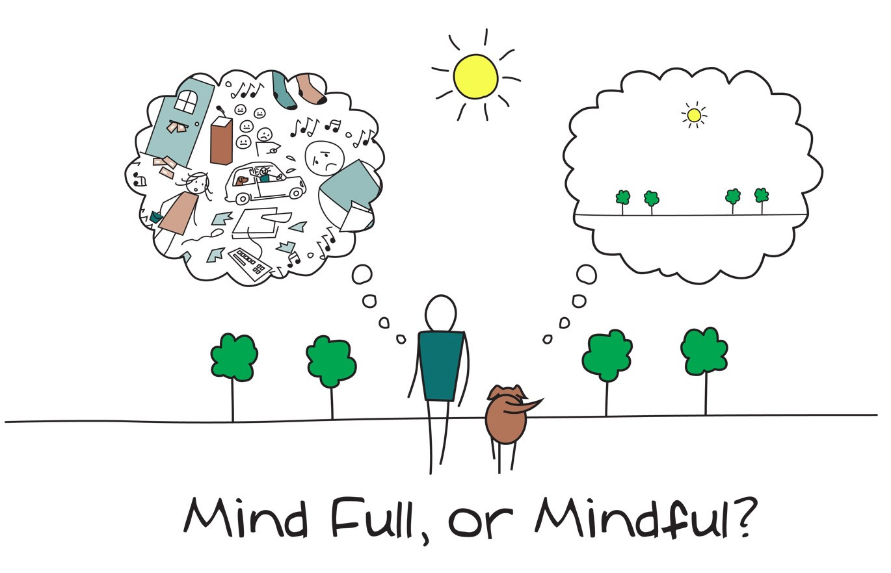

'Search Inside Yourself' Learnings
In Chapter 1 of 'Search Inside Yourself' the author give us a summary of what
Emotional Intelligence is and how important it is in all facets of our lives,
both personal and professional. This is information I sort of already knew, but
it's really interesting to see it backed up by actual science and research,
especially in regards to our overrall happiness in life.
I find the whole topic of mindfulness, meditation, yoga and being 'zen' really
interesting as I think it could make such a profound difference in so many
people's lives if it was something that was brought to the forefront of society - ie.
taught in schools and kindergartens and practised in workplaces. It could potentially
lead to less crime, less violence, less wars, and more compassion and understanding
for our fellow man.
Two Minutes of Mindfulness
I use the app Headspace to help me do 2 minutes of mindful meditatation. Although it sounds so easy in theory, in practise I find it really difficult to try and focus on one thing for 2 minutes. But I also know if I stuck at it, it would get easier and easier. Throughout this course I am attempting to meditate for a few minutes every day.
